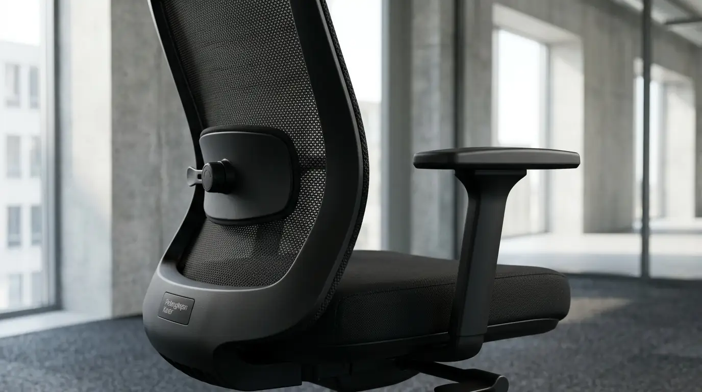

Penyediaan sarana kerja yang nyaman dan tahan lama merupakan prioritas strategis bagi setiap pengambil keputusan, manajer pengadaan, hingga pemilik bisnis yang sedang membangun atau mengeksplorasi ekspansi kantor modern. Pilihan furnitur dengan sandaran jaring (breathable mesh) kini menjadi standar utama dalam merancang interior ruang kerja yang fleksibel, estetis, dan hemat energi. Pembelian dalam volume kursi staff kantor jaring grosir tidak hanya memangkas alokasi belanja modal (CAPEX) perusahaan secara signifikan, tetapi juga menjamin keseragaman desain operasional yang profesional. Melalui kemitraan B2B yang tepat, pengadaan fasilitas kantor dapat diselesaikan secara cepat, efisien, dan bergaransi resmi.
Mengapa Kursi Staff Jaring Menjadi Pilihan Utama Pengadaan Startup Modern?
Pilihan memasok kursi staff kantor jaring grosir menawarkan kombinasi sempurna antara durabilitas tinggi, harga kompetitif, dan desain futuristik yang selaras dengan karakter bisnis bertumbuh pesat. Laporan Indonesia Commercial Office Furniture Survey 2025 mengungkapkan bahwa 78% perusahaan startup dan skala menengah di wilayah perkotaan memilih jenis kursi berbahan jaring (mesh) dibandingkan bahan kulit sintetis maupun kain busa tebal. Di samping itu, data Southeast Asia Workplace Ergonomics Index 2025 menyebutkan bahwa penggunaan kursi kerja jaring bersertifikasi ergonomis mampu menurunkan tingkat keluhan kelainan tulang belakang hingga 36% pada pekerja sektor digital.
Ruang kerja startup identik dengan dinamika kerja yang tinggi, kolaboratif, serta durasi operasional yang intensif. Sandaran jaring fleksibel memberikan ventilasi udara alami yang menjaga suhu tubuh tetap sejuk tanpa bergantung sepenuhnya pada pendingin ruangan berdaya tinggi. Hasilnya, tingkat fokus karyawan tetap terjaga sepanjang hari sekaligus menekan biaya operasional harian perusahaan secara bertahap melalui dukungan mebel berkualitas dari Perlengkapan Kantor.
Bagaimana Cara Mengoptimalkan Anggaran Pengadaan Melalui Distributor Resmi?
Memilih mitra penyuplai melalui distributor kursi jaring murah merupakan strategi efektif bagi tim Procurement untuk mendapatkan spesifikasi teknis terbaik tanpa mengorbankan kualitas material:
- Skalabilitas Diskon Volume: Distributor utama menyajikan skema harga berjenjang. Semakin besar kuantitas unit yang dipesan dalam satu dokumen RFQ (Request for Quotation), semakin rendah harga satuan yang diperoleh.
- Ketersediaan Komponen Pengganti: Pastikan unit yang dibeli didukung oleh ketersediaan purna jual seperti gaslift hidrolik, mekanisme tilting, serta roda castor yang mudah diganti di kemudian hari.
- Standardisasi Material Frame: Pilih rangka pendukung bertulang nylon polymer atau logam kromium yang teruji mampu menahan beban kerja hingga 120 kg secara konsisten.
- Kemudahan Perakitan (Knockdown System): Sistem perakitan yang presisi mempermudah mobilisasi barang ke area gedung perkantoran bertingkat tanpa risiko kerusakan fisik selama proses distribusi.

Penyediaan kursi staff kantor jaring grosir berskala korporat menjamin keseragaman estetika ruang kerja dan durabilitas jangka panjang.
Mengapa Membeli Kursi Kerja Startup Secara Grosir Lebih Menguntungkan?
Membeli inventaris secara eceran sering kali memicu pembengkakan biaya logistik, ketidaksesuaian warna antar-batch, serta hilangnya jaminan garansi terpadu dari pihak manufaktur.
Dengan memanfaatkan program jual kursi kerja startup berskala grosir, perusahaan memperoleh kepastian jadwal pengiriman, layanan instalasi gratis di lokasi, serta kontrak garansi resmi yang mencakup pergantian suku cadang. Keseragaman visual tempat kerja juga secara tidak langsung membangun persepsi profesionalisme di mata klien, calon investor, maupun mitra bisnis yang berkunjung ke kantor Anda.
Optimalkan anggaran belanja furnitur perusahaan Anda dengan solusi pengadaan terpercaya. Kirim RFQ Pengadaan Kantor ke Perlengkapan Kantor sekarang untuk mendapatkan penawaran harga grosir terbaik!
Komparasi Spesifikasi Kursi Staff Kantor Jaring Grosir
Sebagai bahan pertimbangan teknis bagi Manajer Pengadaan dan Facility Manager, berikut adalah tabel komparasi spesifikasi lini produk kursi jaring unggulan kami:
| Parameter Spesifikasi | Tipe Basic Staff Mesh | Tipe Ergonomic Executive Mesh | Tipe Heavy-Duty Startup Mesh |
|---|---|---|---|
| Material Sandaran | High-Density Nylon Mesh | Breathable Korean Mesh | Reinforced Flexible Mesh |
| Penopang Pinggang (Lumbar) | Fixed Lumbar Support | Adjustable Height & Depth | Dynamic Adaptive Lumbar |
| Sistem Hidrolik (Gaslift) | Class 3 TÜV Certified | Class 4 Heavy Duty | Class 4 Heavy Duty Certified |
| Kemiringan Sandaran | Single Lock Mechanism | Synchronized Multi-Lock | Multi-Angle Recline Lock |
| Beban Maksimum | 100 kg | 120 kg | 150 kg |
| Masa Garansi Rangka & Hidrolik | 1 Tahun | 2 Tahun | 3 Tahun |
| Rekomendasi Penggunaan | Staf Operasional / Admin | Manajer / Team Lead | Workstation Intensive 24/7 |
Apa Saja Fitur Ergonomi Wajib Pada Kursi Kerja Staff?
Mengetahui anatomi dasar kursi kerja akan membantu pengambil keputusan dalam menyaring produk yang tepat agar tidak terjebak pada tampilan visual semata:
- Pengatur Ketinggian Presisi (Pneumatic Height Adjustment): Memungkinkan telapak kaki pengguna menapak rata di atas lantai sehingga aliran darah pada paha bagian bawah tetap lancar.
- Sandaran Lengan Ergonomis (Armrest Support): Menyangga siku pada sudut 90 derajat untuk mengurangi ketegangan pada otot bahu dan leher saat mengetik di depan komputer.
- Kontur Busa Dudukan Berkepadatan Tinggi (High-Density Molded Foam): Busa dudukan yang tidak mudah kempes menjamin kenyamanan duduk stabil meski digunakan lebih dari 8 jam sehari.
- Lihat perbandingan sekat kantor pada artikel konsep open space kantor vs kubikal.
- Temukan inspirasi penataan pada ulasan desain tata ruang kantor minimalis.
- Pelajari skema tagihan tempo pada vendor perlengkapan kantor invoice bulanan.
Mengapa Memilih Pengadaan Furnitur di Perlengkapan Kantor?
Sebagai mitra strategis industri perkantoran, Perlengkapan Kantor memahami penuh bahwa kecepatan, transparansi harga, dan keandalan produk adalah kunci utama suksesnya pengadaan barang dan jasa B2B. Kami menyediakan katalog furnitur terlengkap yang dirancang khusus untuk memenuhi standar estetika modern dan kebutuhan ergonomi pekerja perkotaan.
Setiap pemesanan skala grosir didampingi oleh dedicated account manager yang siap membantu proses perhitungan estimasi biaya, koordinasi pengiriman, hingga perakitan langsung di ruang kerja Anda. Dengan jaringan distribusi yang luas dan stok barang yang terjamin, kami memastikan proses perpindahan atau renovasi kantor Anda berjalan tanpa kendala waktu.
Wujudkan tata ruang kerja yang modern, rapi, dan ergonomis dengan anggaran yang terukur. Kirim RFQ Pengadaan Kantor sekarang untuk berdiskusi dengan tim konsultan B2B kami!
Pertanyaan Populer Seputar Pembelian Grosir Kursi Kantor (FAQ)
Kesimpulan Praktis
Memilih pasokan kursi staff kantor jaring grosir adalah keputusan investasi cerdas yang menggabungkan efisiensi anggaran pengadaan dengan peningkatan kesejahteraan fisik para staf. Fasilitas kerja yang nyaman dan bersertifikasi ergonomis secara terbukti mampu menaikkan efisiensi kerja sekaligus menekan angka ketidakhadiran akibat keluhan kesehatan.
Percayakan pengadaan fasilitas kerja perusahaan Anda pada distributor berpengalaman yang menjamin mutu, kecepatan transmisi barang, dan garansi purna jual yang transparan. Siapkan ruang kerja startup Anda dengan penawaran terbaik hari ini. Kirim RFQ Pengadaan Kantor hanya ke Perlengkapan Kantor!

Penulis: Tim Spesialis Perlengkapan Kantor
Divisi Pengadaan Furnitur & Ergonomi di Perlengkapan Kantor. Berpengalaman dalam menyajikan panduan spesifikasi teknis, strategi efisiensi anggaran belanja mebel kantor B2B, dan tata ruang kerja modern berstandar korporat.